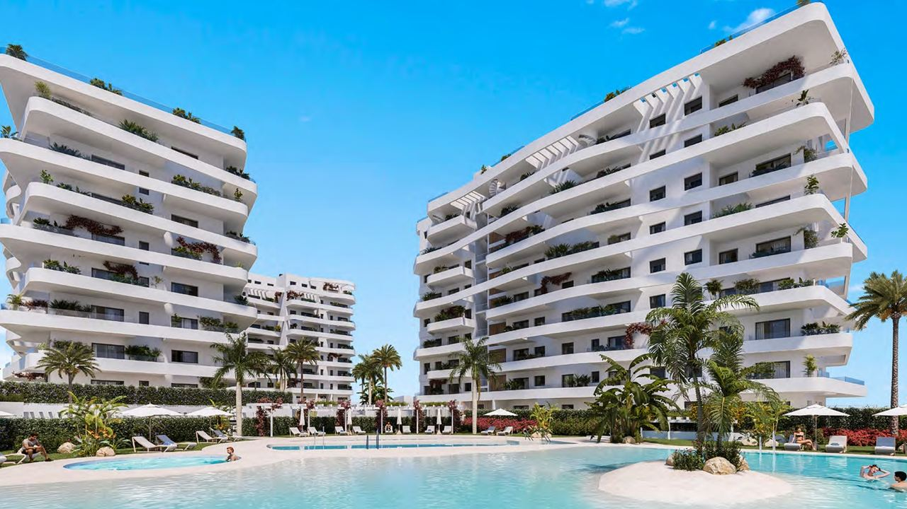
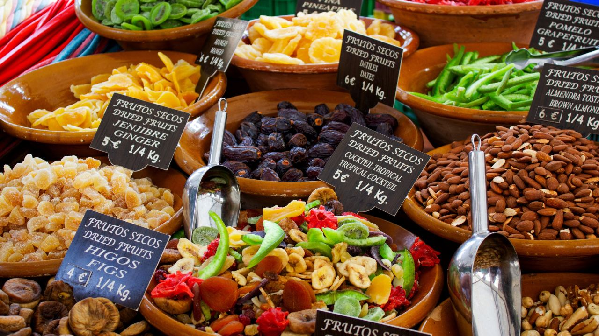

Vivir en España · Guía práctica
Cuánto cuesta vivir en España en 2026
 Por Aleksandra Kobus · · actualizado · 4 min de lectura
Por Aleksandra Kobus · · actualizado · 4 min de lectura

En resumen: Una pareja con vivienda propia en la Costa Blanca o la Costa del Sol gasta normalmente entre unos 1.800 y 2.800 € al mes en el día a día, incluidos los gastos de la casa, la comida, el coche, salir a comer y un seguro médico privado. Alquilar un piso de dos dormitorios añade aproximadamente entre 900 y 1.600 € al mes, más en Marbella y Málaga. Para quien llega de Latinoamérica los precios en euros pueden parecer altos, pero frente al norte de Europa la comida fresca, la restauración y los servicios son más baratos. Un menú del día sigue costando entre 12 y 18 €. Como referencia, el salario mínimo en 2026 es de 1.221 € al mes en 14 pagas.
Cuando encuentran su vivienda, casi todos nuestros compradores preguntan lo mismo: ¿cuánto cuesta realmente vivir aquí cada mes? Depende de dónde y cómo viva, pero estas son las cifras que vemos en la costa en 2026.
Presupuesto mensual para una pareja
Cifras orientativas para dos personas en su propio piso o adosado en la costa, otoño de 2026:
| Concepto | Al mes |
|---|---|
| Cuota de comunidad | 80 – 250 € |
| IBI y tasa de basuras (repartidos en el año) | 40 – 80 € |
| Electricidad | 60 – 150 € (más con aire acondicionado en verano) |
| Agua | 25 – 50 € |
| Internet, televisión y dos móviles | 40 – 70 € |
| Seguro de hogar | 15 – 35 € |
| Supermercado | 450 – 650 € |
| Restaurantes y ocio | 200 – 450 € |
| Coche: combustible, seguro, impuesto, mantenimiento | 200 – 350 € |
| Seguro médico privado | 120 – 400 € (según la edad) |
| Peluquería, ropa, otros | 150 – 300 € |
| Total | aprox. 1.800 – 2.800 € |
Una persona sola suele necesitar entre el 60 y el 70% de esto. Un chalet cuesta más de mantener: piscina, jardín y más electricidad suman a menudo varios cientos de euros al mes.
Gastos de la vivienda

- La cuota de comunidad cubre las zonas comunes, la piscina y el seguro del edificio, y suele pagarse cada mes o cada trimestre. Vea comunidad de propietarios.
- El IBI, el impuesto anual, suele ser de unos cientos de euros para un piso en la costa. Vea IBI 2026.
- La luz se factura cada mes. Las facturas más altas llegan en julio y agosto con aire acondicionado y en invierno si se calienta con electricidad, porque la mayoría de viviendas de costa no tienen calefacción central.
- El agua se factura cada mes o cada dos o tres meses, a menudo junto con alcantarillado y basuras.
- La fibra es rápida y está muy extendida, desde unos 25 a 35 € al mes, o menos en paquete con los móviles.
Si pasa largas temporadas fuera, cuente con alguien que cuide la vivienda y mantenga el seguro de hogar.
Si alquila
Los alquileres de larga duración han subido mucho. Como referencia para un piso de dos dormitorios con contrato anual: entre 900 y 1.300 € al mes en Torrevieja, Orihuela Costa o Benidorm, entre 1.100 y 1.600 € en Alicante capital, Altea o Jávea, y entre 1.400 y 2.500 € o más en Málaga, Estepona y Marbella. Cuente con una fianza de una mensualidad más hasta dos meses de garantía adicional. Vea alquiler de larga duración en España.
Precios de la compra

Precios habituales en grandes supermercados como Mercadona, Consum, Lidl o Carrefour:
| Producto | Precio habitual |
|---|---|
| Barra de pan | 0,60 – 1,20 € |
| Leche, 1 litro | 0,90 – 1,20 € |
| Huevos, docena | 2,50 – 3,50 € |
| Pechuga de pollo, 1 kg | 6 – 9 € |
| Tomates, 1 kg | 2 – 3,50 € |
| Naranjas, 1 kg | 1,30 – 2,50 € |
| Aceite de oliva virgen extra, 1 litro | 6 – 10 € |
| Buena botella de vino de la zona | 4 – 10 € |
En los mercados municipales la fruta, la verdura y el pescado suelen ser mejores que en el supermercado, sobre todo en temporada.
Comer fuera
| Café en la barra | 1,40 – 2,20 € |
| Caña | 2 – 3,50 € |
| Tapa | 3 – 7 € |
| Menú del día (tres platos, mediodía entre semana) | 12 – 18 € |
| Cena para dos en un restaurante medio, con vino | 55 – 90 € |
En los paseos marítimos y en Marbella los precios son más altos. Sobre la propina, vea las propinas en España.
Sanidad
- Visitantes de la UE: usan la Tarjeta Sanitaria Europea para la atención necesaria en la sanidad pública durante su estancia.
- Pensionistas de la UE que se trasladan: suelen poder darse de alta en la sanidad pública con el formulario S1 de su país.
- Otros residentes sin cobertura: tras un año empadronados pueden acceder a la sanidad pública mediante el convenio especial, por 60 € al mes con menos de 65 años y 157 € al mes a partir de 65.
- Seguro médico privado: aproximadamente 50 a 100 € al mes por persona por debajo de 50 años, y bastante más a partir de 65. Es obligatorio para algunos visados, como la residencia no lucrativa.
- Consultas privadas: una visita al médico general o especialista suele costar entre 60 y 120 €, y una revisión dental con limpieza entre 40 y 80 €.
Más sobre instalarse a largo plazo en la jubilación en España y estancias de más de 90 días.
Servicios y ocio
| Corte de pelo de caballero | 12 – 25 € |
| Corte y peinado de señora | 30 – 60 € |
| Manicura | 15 – 30 € |
| Limpieza del hogar, por hora | 12 – 18 € |
| Entrada de cine | 7 – 10 € |
| Gimnasio | 30 – 60 € al mes |
| Green fee de golf | 50 – 150 € |
Muchos placeres son gratis: playas, paseos, rutas por la montaña, fiestas locales y, en Alicante, el Castillo de Santa Bárbara y los museos municipales.
Preguntas frecuentes
¿Cuánto cuesta vivir en España al mes?
Una pareja con vivienda propia en la costa gasta normalmente entre 1.800 y 2.800 € al mes en el día a día. Una persona sola necesita entre el 60 y el 70% de eso. Si alquila, sume entre 900 y 1.600 € al mes por un piso de dos dormitorios.
¿Es España más barata que el norte de Europa?
En comida, restaurantes, servicios y gastos de la vivienda, por lo general sí. Coches, electrónica y productos importados cuestan más o menos lo mismo.
¿Cuánto suponen los gastos mensuales de un piso?
Luz, agua, internet y comunidad suelen sumar entre 200 y 500 € al mes, según el edificio y el uso del aire acondicionado.
¿Pueden los extranjeros usar la sanidad pública?
Los visitantes de la UE usan la Tarjeta Sanitaria Europea, los pensionistas de la UE se dan de alta con el formulario S1 y otros residentes pueden suscribir el convenio especial tras un año empadronados, por 60 o 157 € al mes según la edad.
¿Cuál es el salario mínimo en España en 2026?
1.221 € al mes en 14 pagas, es decir, 17.094 € al año.
El lugar adecuado para su presupuesto
El coste de vida cambia mucho de un municipio a otro. Cuéntenos cómo quiere vivir y le propondremos zonas y viviendas que encajen, con gastos realistas. Contacte con nosotros.
Fuentes: Notarios y Registradores – Royal Decree 126/2026 on the 2026 minimum wage · European Commission – European Health Insurance Card